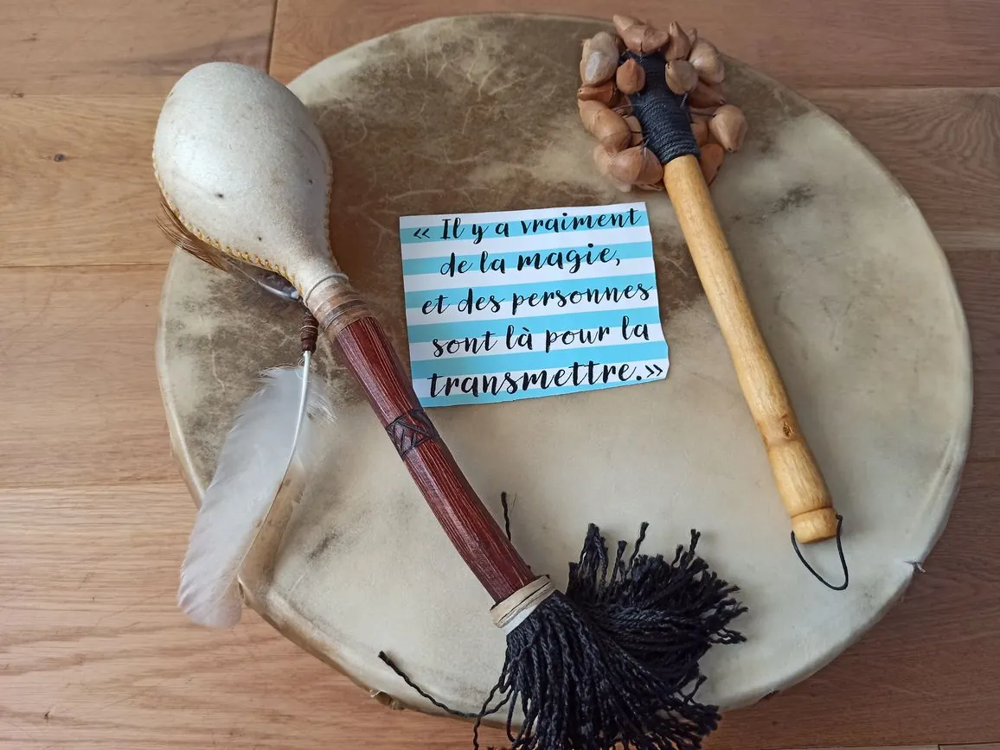

Sud-Essonne · Dourdan
Pratiques chamaniques & sonores
Un tambour, un souffle, une vibration.
Pour revenir à vous quand la vie s'est figée.
Il y a des moments où la vie se fige. On ne sait plus très bien qui l'on est, ni par où passer. Alors on s'arrête au bord de l'eau. On écoute un tambour battre comme un cœur, et quelque chose, très loin dedans, se souvient.
Allongé·e au milieu des bols et des gongs, vous n'avez rien à faire. La vibration fait le chemin.
1 h 15 · 80 € — collectif 25 €Le tambour ouvre la porte vers ce qui demande à guérir. Chaque soin naît dans l'instant.
1 h 15 · 80 €Une journée entière à deux, entre amies, de 10 h à 17 h. Rituels, forêt, tambour et silence.
350 € le duoCercles de femmes à la lune nouvelle, cérémonies des saisons, stages de voix et de voyage au tambour.
dès 30 €Ce que vous entendez n'est qu'un écho. En séance, la vibration ne passe pas seulement par les oreilles : elle traverse le corps entier, de la peau jusqu'aux os, et le mental finit par se taire.
Montez le son. L'écho est recréé dans votre navigateur ; en séance, ce sont les vrais bols, cristaux et gongs.
Tout a commencé par un tambour. Un jour, j'ai entendu celui d'une chamane nord-américaine, et quelque chose s'est réveillé en moi — « comme une connaissance profonde, déjà là ».
Aujourd'hui, c'est lui qui ouvre chaque soin. Son rythme régulier apaise le mental et ouvre un passage vers ce qui demande à guérir.

Je ne me rattache à aucune école ni tradition unique. J'ai reçu les transmissions de plusieurs femmes-médecine — péruvienne, népalaise, mongole — et j'écoute aujourd'hui ma propre guidance pour créer, avec chaque personne, les rituels qui lui correspondent vraiment.
« Je ne prends jamais le pouvoir sur le chemin de quelqu'un. Je le facilite. »
Une lettre à chaque solstice et équinoxe : les dates des cercles et une pratique à faire chez soi. Rien d'autre.